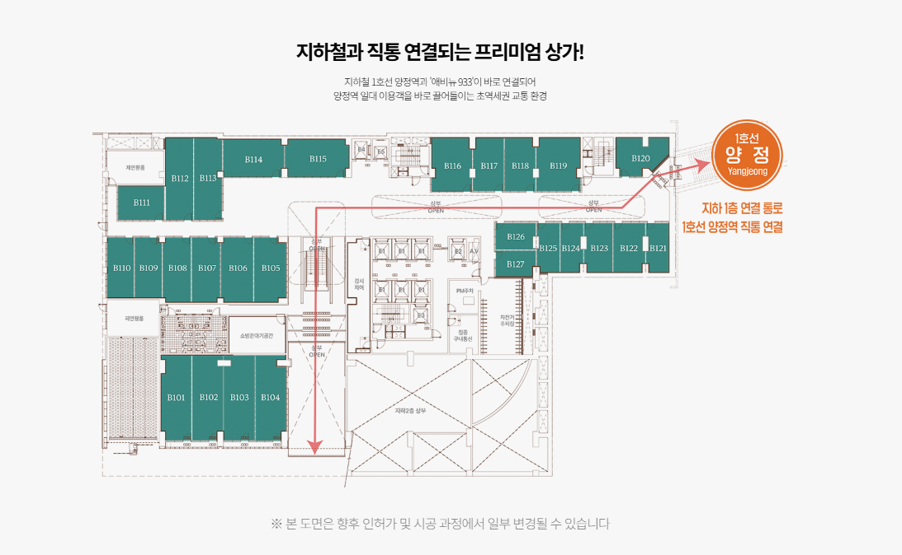
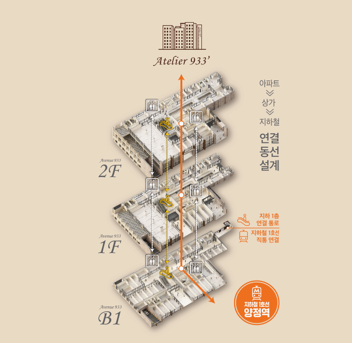

YEONSAN MEDICAL GUIDE
연산 메디컬 빌딩,
지역 이름보다 개원 조건을 비교하세요
연산은 주거와 교통이 발달해 병원개원 후보지로 자주 검토되지만 기존 병의원도 다양하게 형성된 지역입니다. 따라서 단순히 연산이라는 지역 인지도만 보는 것이 아니라 같은 진료과의 경쟁 밀도, 환자 이동반경, 확보 가능한 면적과 비용을 함께 봐야 합니다.
연산에서 원하는 조건을 찾기 어렵다면 인접한 양정까지 후보를 넓혀 동일한 체크리스트로 비교하면 선택 기준이 더 명확해질 수 있습니다.
연산권은 의료수요와 경쟁을 동시에 봐야 합니다
연산은 주거와 교통이 발달해 병원 후보지로 자주 검토되는 지역입니다.
동시에 기존 병의원도 다양하기 때문에 같은 진료과의 밀집도와 신규 개원이 차별화할 수 있는 여지를 함께 확인해야 합니다.
연산 메디컬 빌딩 확인 체크리스트
- 양정역에서 상업시설 진입부까지 이동
- 진입 후 에스컬레이터·엘리베이터가 바로 보이는지 확인
- 희망 호실까지 복도 방향과 이동거리 체크
- 점포 전면과 간판이 어느 지점부터 보이는지 확인

행정동보다 환자가 실제로 움직이는 생활반경이 중요합니다
환자 입장에서는 주소상 연산동인지 양정동인지보다 이동시간과 접근 편의가 더 중요할 수 있습니다.
목적형 진료는 한두 정거장 이동이 자연스러운 경우도 있어 인접 생활권까지 후보를 넓혀볼 가치가 있습니다.

개원 알아보고 계시다면 이곳도 경쟁력있습니다.
연산 메디컬 빌딩에서 원하는 면적이나 설비조건을 찾기 어렵다면 양정의 아틀리에933도 함께 비교해볼 수 있습니다.
양정역 연결과 주거·업무수요를 함께 볼 수 있어 연산권과 다른 방식의 개원 조건을 검토할 수 있습니다.

연산의 환승 편의와 양정의 직접 접근을 비교하세요
연산은 여러 교통축이 모이는 장점이 있지만 실제 병원 건물까지의 이동단계가 많을 수 있습니다.
양정 후보를 함께 볼 때는 지하철 하차 후 건물 진입과 호실까지 이동이 얼마나 단순한지 동일한 기준으로 비교하는 것이 좋습니다.

경쟁이 높은 지역은 초기 마케팅비도 함께 봐야 합니다
같은 진료과가 많은 지역은 온라인 검색과 지도 노출, 외부 간판 경쟁도 강해질 수 있습니다.
임대료가 비슷하더라도 신규 환자 확보에 필요한 광고비가 달라질 수 있으므로 전체 예산에 반영해야 합니다.
같은 예산으로 확보 가능한 공간이 달라질 수 있습니다
연산과 양정에서 같은 예산으로 확보 가능한 전용면적, 전면 폭, 장비실 공간이 달라질 수 있습니다.
진료 효율에 필요한 최소면적을 먼저 정하면 지역별 비교가 더 명확해집니다.
연산 메디컬 빌딩 확인 체크리스트
- 전용면적과 실사용 가능한 공간 형태
- 점포 전면 폭과 코너 여부
- 에스컬레이터·엘리베이터에서의 가시성
- 간판 설치와 노출 가능 범위
- 급배수·전기·환기·배기 등 설비조건
- 차량 방문 후 호실까지의 이동 편의
장비 반입과 공사 난이도까지 총비용으로 보세요
메디컬 호실은 전기, 급배수, 환기, 엘리베이터 규격과 복도 폭이 중요합니다.
임대조건이 좋아도 공사 난이도가 높으면 전체 개원비용이 커질 수 있어 총비용 기준으로 봐야 합니다.
연산과 양정을 같은 체크리스트로 비교하세요
환자 접근성, 주차, 경쟁병원, 면적, 설비, 계약조건, 관리비를 한 기준표에 넣고 비교하면 지역 이름에 끌리지 않고 판단하기 쉬워집니다.
최종적으로는 내 진료과에 가장 맞는 공간을 확보할 수 있는지가 핵심입니다.
연산 메디컬 빌딩 자주 묻는 질문
연산 메디컬 빌딩을 검토하면서 자주 확인하는 내용을 실제 개원과 운영 관점에서 정리했습니다.
연산에서 개원하려는데 양정도 함께 봐야 하나요?
인접 생활권이므로 환자 이동과 예산 조건이 맞는다면 함께 비교할 가치가 있습니다.
연산은 병원이 많아서 무조건 유리한가요?
의료수요가 있다는 장점과 높은 경쟁이라는 점을 동시에 봐야 합니다.
아틀리에933을 비교하는 이유는 무엇인가요?
양정역 연결과 생활·업무수요를 함께 검토할 수 있어 연산권과 다른 조건을 비교할 수 있기 때문입니다.
같은 예산이면 무엇을 비교해야 하나요?
전용면적, 평면, 설비, 관리비와 초기 공사비까지 포함한 총비용을 비교하는 것이 좋습니다.
목적형 진료는 지역 경계가 덜 중요한가요?
진료의 전문성과 목적성이 높을수록 환자의 이동범위가 넓어질 수 있습니다.
연산 메디컬 빌딩
호실별 조건을 비교해보세요.
- 현재 상담 가능 호실 안내
- 호실별 면적·위치·동선 비교
- 희망 진료과별 설비조건 상담